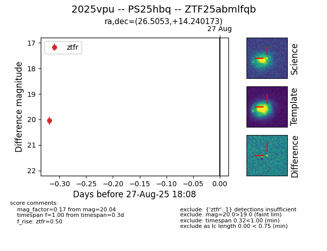

Target 2025vpu at 2025-08-27 18:08, see:
FINK: fink-portal.org/ZTF25abmlfqb
Lasair: lasair-ztf.lsst.ac.uk/objects/ZTF25abmlfqb
ALeRCE: alerce.online/object/ZTF25abmlfqb
TNS: wis-tns.org/object/2025vpu
YSE: ziggy.ucolick.org/yse/transient_detail/2025vpu
alt names
ZTF25abmlfqb (ztf,fink)
2025vpu (tns,yse)
PS25hbq (panstarrs)
coordinates:
equatorial (ra, dec) = (26.5053,+14.24017)
galactic (l, b) = (142.3575,-46.56253)
photometry
last ztfr=20.04
1 ztfr detections
